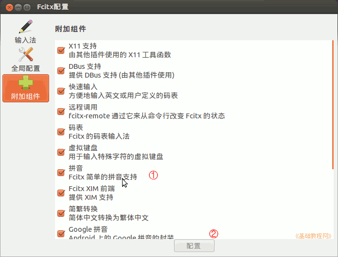

Ubuntu 入门操作指南
作者：TeliuTe 来源：基础教程网
二十、Fcitx 输入法 返回目录 下一课Fcitx 也叫小企鹅输入法，是 Free Chinese Input Toy for X 的简写；
1、Fcitx 输入法
1）在软件中心或新立得中，搜索fcitx，然后标记安装，要是想用五笔，可以添加 wbpy 五笔拼音或 wubi 五笔输入法；
2）安装好已后，点右上角“系统设置 － 语言支持” 中，选择 fcitx 输入法，然后注销重新登录；
3）打开一个文本输入程序，按 Ctrl + 空格 就可以输入中文，按 Ctrl + Shift 切换输入法，也可以在面板上的小企鹅上点右键，选择输入法；
2、Fcitx 输入法
1）在顶部面板的输入条上点右键，选择“配置”，打开设置窗口，设置以后记得点“应用”；
2）在输入法设置中，在左侧栏中选择一个输入法，再点中间的向右按钮，就可以添加进去，要删除则相反；
3）在第二个“全局配置”中，将“在窗口间共享状态”设置为“按程序”，这样同一个程序中输入法的状态是相同的，点“应用”；
4）在上边的“输出”标签中，设置回车键提交原始文本，也就是输入英文，下边的切换非激活时也打勾，点“应用”；
5）“外观”标签中，根据自己的喜好勾选哪些内容显示；
6）在“快捷键”标签里，设置“激活/非激活状态”为左 Shift 键，下面的翻页键，把第二个“禁用”点一下，改为小于号，往下拉些，把另一个改为大于号；
7）点左侧的“附加设置”，进去可以对各个项单独配置，选中后点下边的“配置”；

本节学习了 Fcitx 输入法的基础知识，如果你成功地完成了练习，请继续学习下一课内容；
本教程由86团学校TeliuTe制作|著作权所有
基础教程网：http://teliute.org/
美丽的校园……
转载和引用本站内容，请保留版权信息和本站链接。